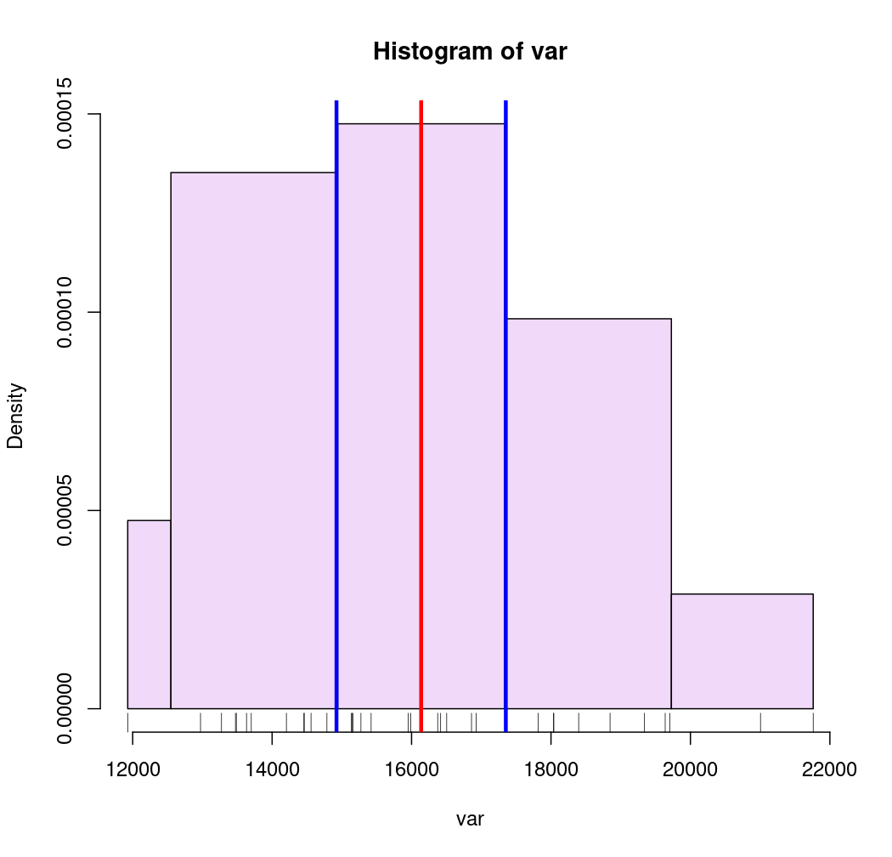

A function to classify continuous variables.
getBreaks(v, nclass = NULL, method = "quantile", k = 1, middle = FALSE, ...)
Arguments
| v | a vector of numeric values. |
|---|---|
| nclass | a number of classes |
| method | a classification method; one of "fixed", "sd", "equal", "pretty", "quantile", "kmeans", "hclust", "bclust", "fisher", "jenks", "dpih", "q6", "geom", "arith", "em" or "msd" (see Details). |
| k | number of standard deviation for "msd" method (see Details).. |
| middle | creation of a central class for "msd" method (see Details). |
| ... | further arguments of |
Value
A numeric vector of breaks
Details
"fixed", "sd", "equal", "pretty", "quantile", "kmeans", "hclust",
"bclust", "fisher", "jenks" and "dpih" are classIntervals
methods. You may need to pass additional arguments for some of them.
Jenks ("jenks" method) and Fisher-Jenks ("fisher" method) algorithms are based on the same principle and give
quite similar results but Fisher-Jenks is much faster.
The "q6" method uses the following quantile probabilities: 0, 0.05, 0.275, 0.5, 0.725, 0.95, 1.
The "geom" method is based on a geometric progression along the variable values.
The "arith" method is based on an arithmetic progression along the variable values.
The "em" method is based on nested averages computation.
The "msd" method is based on the mean and the standard deviation of a numeric vector.
The nclass parameter is not relevant, use k and middle instead. k indicates
the extent of each class in share of standard deviation. If middle=TRUE then
the mean value is the center of a class else the mean is a break value.
Note
This function is mainly a wrapper of classIntervals +
"arith", "em", "q6", "geom" and "msd" methods.
See also
Examples
#> Reading layer `mtq' from data source #> `/tmp/RtmppBiN3A/temp_libpath43d97684eada/cartography/gpkg/mtq.gpkg' #> using driver `GPKG' #> Simple feature collection with 34 features and 7 fields #> Geometry type: MULTIPOLYGON #> Dimension: XY #> Bounding box: xmin: 690574 ymin: 1592536 xmax: 735940.2 ymax: 1645660 #> Projected CRS: WGS 84 / UTM zone 20N# Quantile intervals breaks <- getBreaks(v = var, nclass = 6, method = "quantile") hist(var, probability = TRUE, breaks = breaks, col = "#F0D9F9")# Pretty breaks breaks <- getBreaks(v = var, nclass = 4, method = "pretty") hist(var, probability = TRUE, breaks = breaks, col = "#F0D9F9", axes = FALSE)# kmeans method breaks <- getBreaks(v = var, nclass = 4, method = "kmeans") hist(var, probability = TRUE, breaks = breaks, col = "#F0D9F9")# Geometric intervals breaks <- getBreaks(v = var, nclass = 8, method = "geom") hist(var, probability = TRUE, breaks = breaks, col = "#F0D9F9")# Mean and standard deviation (msd) breaks <- getBreaks(v = var, method = "msd", k = 1, middle = TRUE) hist(var, probability = TRUE, breaks = breaks, col = "#F0D9F9")